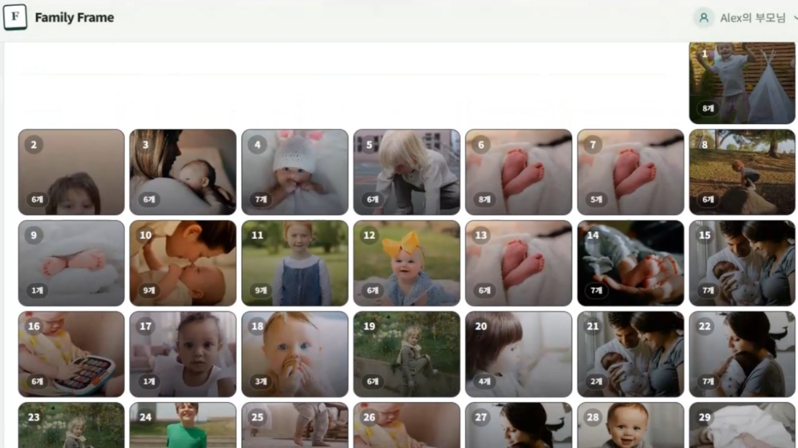
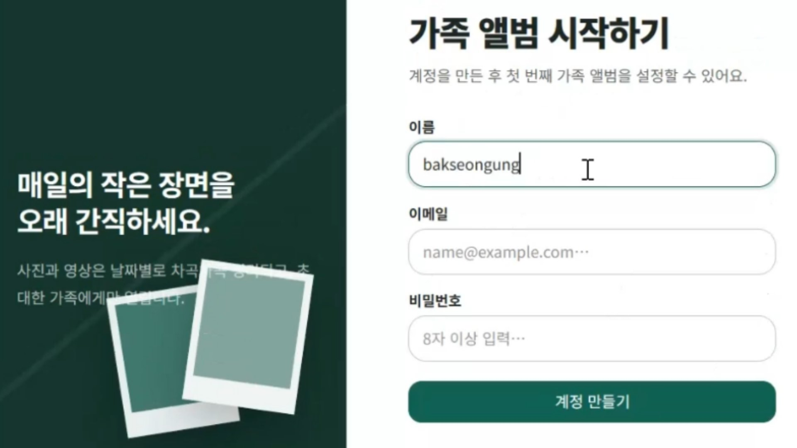
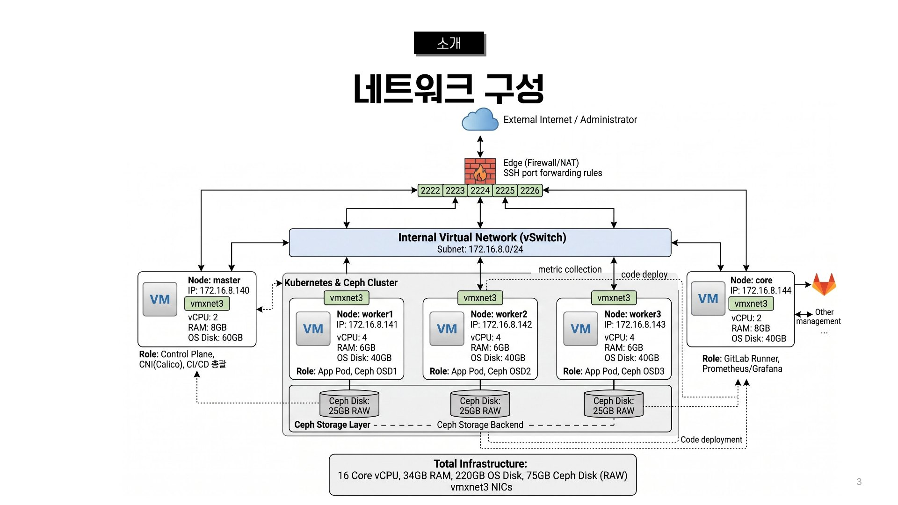
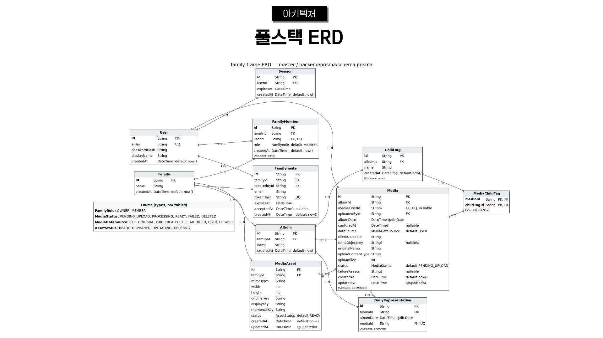
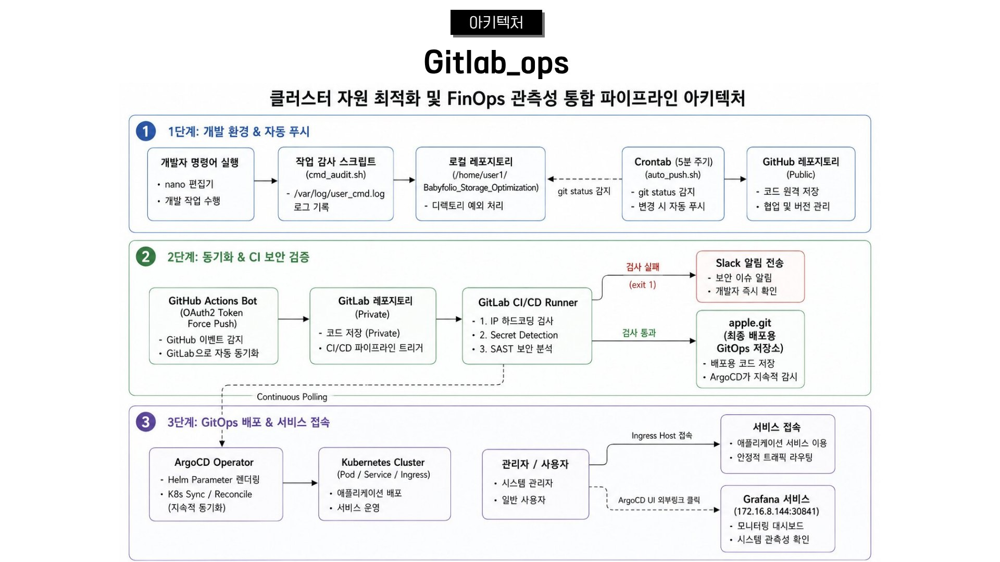
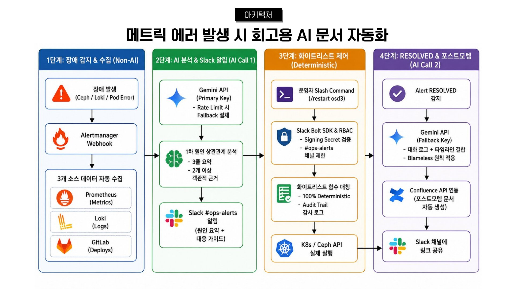
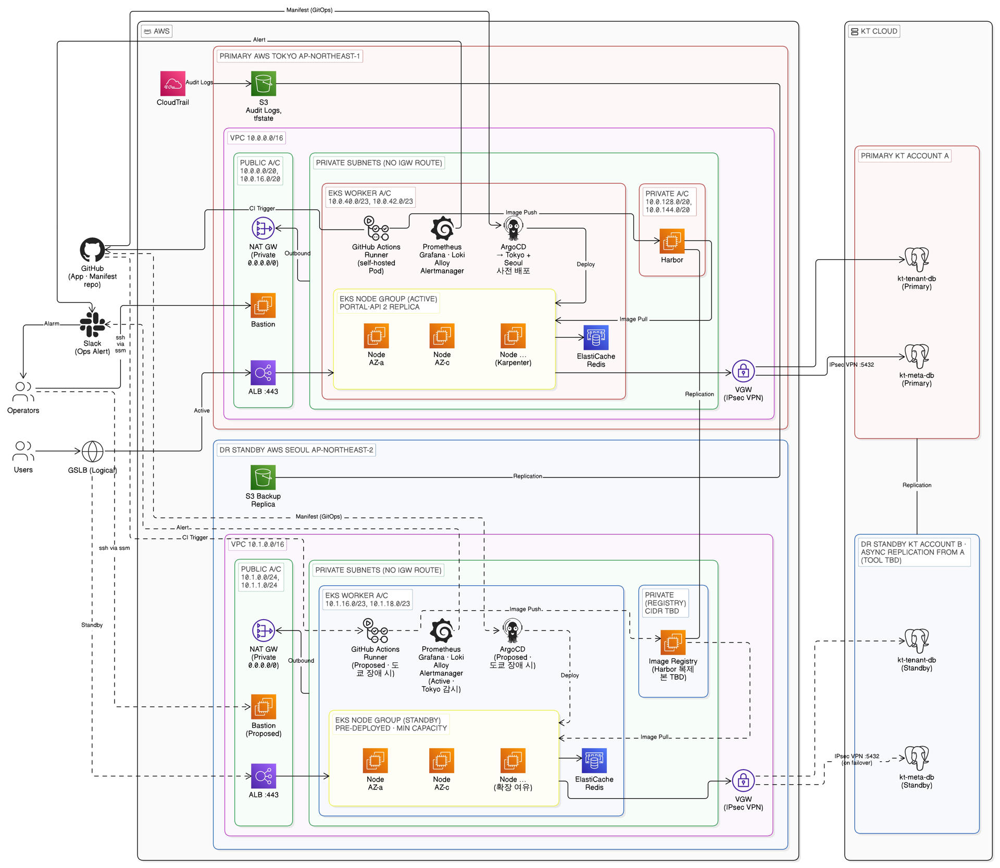

박성웅
정확하게 듣는 것이 팀워크의 시작임을 현장에서 배운 박성웅입니다.
| 이메일 | yeopoh13@gmail.com |
|---|---|
| 연락처 | 010-3223-1390 |
| GitHub | github.com/Bakseongung |
프로젝트
프로젝트
쑥쑥찰칵 1억 스토리지 비용 절감 프로젝트
성장앨범 미디어 서비스의 클라우드 Object Storage를 Kubernetes 기반 Rook-Ceph로 대체해 저장 효율·운영 안정성·비용 효율성을 검증 · 인프라/스토리지, DevSecOps, FinOps, AI ChatOps 담당
01. 프로젝트 개요
01-1. 서비스 분석
| 벤치마킹 대상 | 쑥쑥찰칵 · 구글 플레이스토어 육아 카테고리 대표 서비스, 사용자 약 100만 명 규모의 성장앨범 사진·영상 관리 서비스 |
|---|
서비스 특징
- 자녀 성장 과정을 사진·영상으로 기록하고 공유하는 성장앨범 서비스
- 사용자가 업로드한 사진·영상 데이터를 장기간 보관하는 데이터 중심 서비스
- 일반 화질 기반 저장 및 공유 기능 제공
- 사진·영상 데이터가 계속 늘어나 스토리지 용량과 운영 비용이 함께 증가하는 구조
분석 결과
- 성장 기록은 장기 보관 가치가 높아 시간이 지날수록 저장 용량이 계속 증가한다.
- 사진·영상 데이터 증가에 따라 스토리지 비용과 네트워크 트래픽 비용이 함께 증가한다.
- 대규모 성장앨범 서비스에서는 애플리케이션 기능보다 안정적인 저장 구조와 비용 효율적인 스토리지 운영 전략이 핵심이다.
01-2. 문제 정의
- 저장 비용 사진·영상 데이터 증가에 따른 Object Storage 저장 비용 증가
- 트래픽 비용 사용자 조회·다운로드 과정에서 발생하는 아웃바운드 트래픽 비용 증가
- 장기 보관 부담 장기 보관 데이터 증가에 따른 지속적인 운영 비용 부담
- 복제 오버헤드 데이터 보호를 위한 복제·백업 구조로 인한 추가 저장 공간 필요
기존 클라우드 Object Storage 구조를 분석하고, Kubernetes 환경에서 운영 가능한 Rook-Ceph 기반 클라우드 네이티브 스토리지를 설계해 저장 효율, 운영 안정성, 비용 효율성을 검증했다.
01-3. TCO 기반 비용 비교 및 기대 효과
성장앨범 서비스의 대규모 사진·영상 저장 환경을 가정해 클라우드 Object Storage와 Rook-Ceph 스토리지의 총소유비용(TCO)을 비교했다.
| 연간 기준 | AWS S3 Standard | Cloudflare R2 | Rook-Ceph 자체 운영 |
|---|---|---|---|
| 저장 비용 | 약 2.7억 원 | 약 1.8억 원 | 하드웨어·전력 운영 비용 중심 |
| 데이터 전송 비용 | 약 15억 원 | API 비용 중심 | 내부 네트워크 기반 운영 |
| 운영 비용 | 포함 | 포함 | 전력 및 관리 비용 발생 |
| 예상 총비용 | 약 17~18억 원 | 약 1.8억 원 | 실습 환경 기준 전력비 중심 운영 |
기대 효과
- 저장 효율 Erasure Coding(K=2, M=1)으로 데이터 보호 수준을 유지하면서 3복제 대비 저장 효율 향상 저장 효율 66.7% (3복제 33.3%)
- 호환성 S3 호환 API(RadosGW)로 기존 애플리케이션 변경 최소화
- 운영 자동화 Kubernetes Native Storage 기반의 확장성과 자동화 운영 환경 확보
- TCO 예측 사진·영상 혼합 데이터셋으로 저장 용량 증가에 따른 비용 변화를 회귀분석해 PB급 환경의 TCO를 예측하고 스토리지 투자 의사결정 근거 제시 100TB → 1PB → 5PB → 10PB
서비스 화면


아키텍처
5노드 VM 클러스터 · App Pod → Go 사이드카 → Rook-Ceph EC 2+1 → Cloudflare CDN
네트워크 구성

| master | Control Plane, CNI(Calico), CI/CD 총괄 | 2 vCPU · 8GB |
|---|---|---|
| worker1~3 | App Pod, Ceph OSD1~3 (노드별 25GB RAW) | 4 vCPU · 6GB |
| core | GitLab Runner, Prometheus/Grafana | 2 vCPU · 8GB |
미디어 처리 · 저장 파이프라인

- S3 Direct Upload 클라이언트가 Ceph RGW 임시 버킷에 직접 업로드하고 메타데이터는
PENDING_UPLOAD로 등록 - 트랜잭션 경쟁 방지
SELECT … FOR UPDATE SKIP LOCKED로 작업을 집어가고 즉시PROCESSING으로 커밋 워커 간 중복 처리 차단 - 동시성 분리 Go Semaphore로 이미지(WebP, 4)와 동영상(FFmpeg 720p, 2) 처리 풀을 분리하고, 워커 2개는 PodAntiAffinity로 노드 분산
- 안정적 마무리 404 대비 최대 10회 재시도, 최종 저장 후 임시 객체 삭제와
MediaAssetREADY 커밋
풀스택 ERD

DevSecOps · AI ChatOps
커밋부터 배포까지 자동화하고, 장애 감지부터 포스트모템까지 이어지는 운영 파이프라인
GitLab CI/CD · GitOps

- 작업 감사 · 자동 푸시
cmd_audit.sh로 명령 기록(/var/log/user_cmd.log), Crontab 5분 주기auto_push.sh - 이중 저장소 격리 GitHub Public → GitHub Actions Bot(OAuth2 Force Push) → GitLab Private 동기화
- 3단계 CI 보안 게이트 IP 하드코딩 검사, Secret Detection, Semgrep SAST 실패 시 Slack 알림 및 배포 차단
- GitOps 배포 registry.gitlab.com에 이미지 저장,
apple.git배포 저장소를 ArgoCD가 감시해 Helm으로 K8s 동기화
AI ChatOps 장애 대응

- 컨텍스트 자동 수집 Alertmanager Webhook으로 Prometheus 메트릭, Loki 로그, GitLab 배포 이력(±5분)을 함께 수집
- 1차 원인 분석 (AI Call 1) Gemini가 SRE 관점으로 3줄 요약과 2개 이상의 객관적 근거를 Slack
#ops-alerts에 전송 - 결정적 제어 AI는 분석만 하고, 실제 조치는 Slack Slash Command(
/restart osd3)를 RBAC 검증 후 화이트리스트 함수로만 실행 100% Deterministic · 감사 로그 - 포스트모템 자동화 (AI Call 2) Alert RESOLVED 감지 시 Blameless 포스트모템을 Confluence에 생성하고 Slack에 링크 공유
- API Key 이원화 Primary(실시간 분석)와 Fallback(포스트모템, Rate Limit 시 절체)으로 분리
검증 결과
부하·스케일링·장애 복구·FinOps 관측 검증
메트릭 관리 파이프라인

- 업로드 · 조회 부하 Locust 3,000 VUser, 100 TPS 목표 · 썸네일 조회 60% / 업로드 30%(1인 5개, 파일당 ≤50MB) / 동영상 Range Stream 10% 평균 Latency 180ms · 성공률 99.98%
- HPA 오토스케일링 트래픽 스파이크 감지 후 App Pod 2 → 5 → 최대 8개 확장 반응 시간 28초
- Bin Packing MostRequestedPriority로 worker1에 앱을 밀집 배치(CPU 88.5%, Memory 85.2%), worker3는 Ceph OSD 전용으로 격리해 I/O 간섭 차단 클러스터 유휴율 12% 이하
- OSD Failover worker1 OSD 강제 중지 시 PG
active+undersized+degraded상태에서도 읽기/쓰기 유지 Downtime 0초 · 10~15초 내 Backfill - 전력 관측 Kepler로 Pod/컨테이너 단위 Joule·Watt 수집, TCO 수식 파라미터 자동 추출
FinOps 대시보드 설계안

멀티클라우드 기반 업종 특화 SaaS 플랫폼: 제조에서 금융으로
Team Eclipse · IaC/프로비저닝, DB 설계 담당
아키텍처



설계 개선
- DB 전환 절차 KT 계정 A 쓰기 차단 후 계정 B를 Primary 역할로 전환하는 절차 확정 필요 split-brain 방지가 핵심
- 원복(Failback) 절차 B→A 역동기화 후 데이터 정합성 검증, 실패 시 재동기화 검증 없는 원복 금지
- 이미지 레지스트리 이중화 서울에 Harbor 복제본 구성 현재 도쿄 단일 배치
- VPN 연결 정보 확인 KT 측 실제 VPN 장비·공인 IP·BGP 지원 여부 서울 DR 확정의 최대 블로커
DB 설계
PostgreSQL 단일 DB portal_meta · 논리 스키마 5개 · 테이블 21개
| identity | 계정, 고객사, 임시 권한 | accounts grants |
|---|---|---|
| request | 자원 신청, 조회용 읽기 모델 | access_requests resource_projections |
| control | 승인, 테라폼 배포 작업 제어 | approval_requests provisioning_jobs products 외 |
| finops | 자산 원장, 시간당 사용량, 청구서 | resource_inventory usage_hourly client_invoices 외 |
| billing | PG 결제 기록 | payment_transactions |
- 신청과 조회 분리 (CQRS) 신청 원본과 화면용 투영 테이블을 나눠 목록 조회 성능 확보
- 멱등성과 동시성 제어 멱등성 키, 낙관적 락 버전, 재시도·전달 상태 컬럼으로 비동기 처리의 중복과 경합 방지
- 배포 추적성 프로비저닝 작업마다 테라폼 모듈 버전, 패키지 SHA-256 해시, State 경로를 기록
- 청구서 무결성 단가표 이력(SCD Type 2), 청구서 동결과 해시, 품목 라인 스냅샷으로 사후 변경 차단
- 삭제 정책 소프트 삭제 후 아카이브에 스냅샷을 남기고, 보존 기간이 지나면 물리 삭제
태그 표준
모든 자원에 필수 태그 6종 · 키와 값은 공백 없는 소문자
| tenant_id | platform · manufacturing · finance | 비용 정산과 테넌트 격리 단위 |
|---|---|---|
| client_id | client-* (공통 자원은 shared) | 고객사 식별, 네트워크 격리, 개별 청구 단위 |
| tier | tier1 · tier2 | SLA 중요도 (핵심 무중단 / 일반·배치·실험) |
| env | dev · stg · prod | 환경 구분과 수명주기 통제 |
| managed_by | eclipse-paas | PaaS 관리 자원 식별, 미부착 자원은 삭제 대상 고아 자원 |
| service | 컴포넌트별 고유 이름 | 서비스 단위 원가 분석, 메트릭 필터링 |
- 기존 자원 일괄 교정 콘솔과 테스트 단계에서 만든 AWS 자원의 누락·대소문자 파편화 태그를 표준 6종으로 교정
- 태그 없는 자산 관리 태그를 붙일 수 없는 KT Cloud 자산은 포털의 자산 원장이 가상 태그 원장 역할